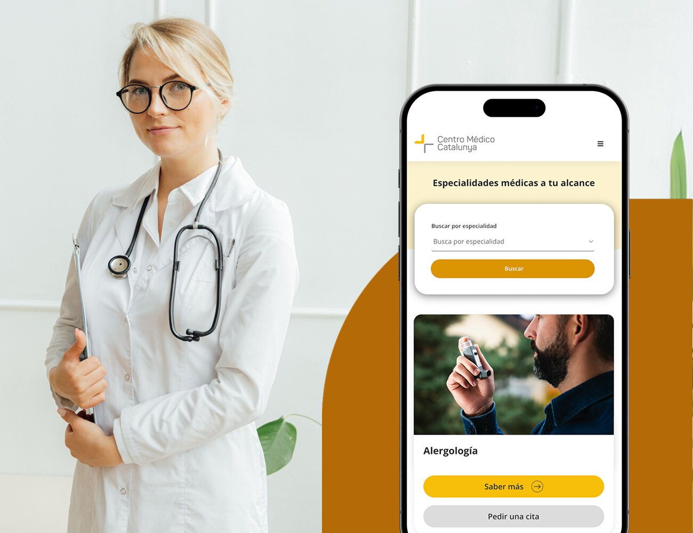

PRIORDEI
WebsiteTurning Priordei's oil heritage into a seamless, high-converting e-commerce experience.
View project
Turning Priordei's oil heritage into a seamless, high-converting e-commerce experience.
View projectBranded conservation: identity, signage, and eco-infrastructure for over 5,000 hectares of natural reserves.
View project
Reimagining a 30-year medical institution through intuitive UX and high-converting booking journeys.
View projectWith a strong foundation in graphic design and branding, I've delivered over 40 web projects and managed strategies for 20+ brands. I translate business goals into intuitive, high-conversion digital experiences where functional UX meets compelling brand identity.
Meet Milena